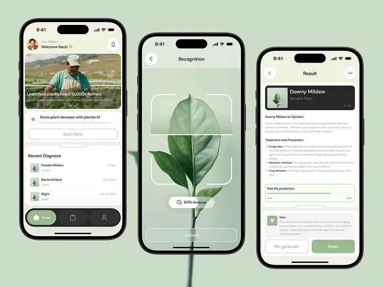

An app based solution that helps farmers identify diseases in plants and crops by uploading images and getting simple treatment suggestions.
View Project GitHub LinkedIn
To support farmers with quick disease identification, treatment guidance and better crop management.
Farmers can upload plant or crop images to identify possible diseases.
Provides simple remedies and preventive steps for the detected disease.
Helps farmers take quick action and reduce crop loss through early guidance.
Farmer uploads a clear image of the affected plant or crop leaf.
The app checks the image and identifies the possible plant disease.
Farmer gets basic treatment and prevention suggestions.
This landing page is created as part of my CodSoft Web Development Internship Level 1 Task 2.
The project topic is an app based solution to identify and solve diseases in plants and crops. Many farmers face difficulty in detecting crop diseases at an early stage, which can reduce crop quality and productivity.
The main aim of this app is to help farmers identify diseases using plant images and provide suitable treatment and prevention suggestions in an easy and understandable way.
Name: Samarth Birajdar
Email: samarthbirajdar435@gmail.com
GitHub: My GitHub
LinkedIn: My LinkedIn Profile